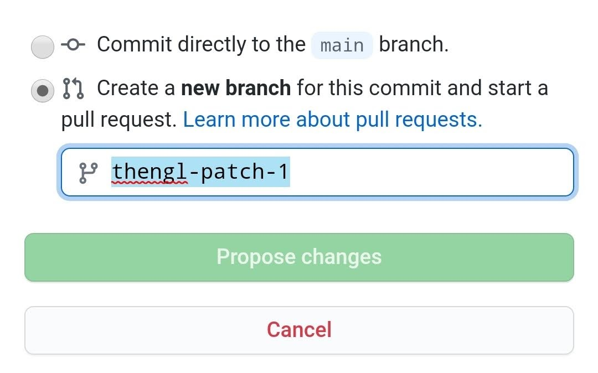

Welcome
This repository contains a review of Global in-situ Observations & Measurements networks and data sets, and a number of compiled and analysis ready point (spatial) data sets that can be used for training global spatial prediction models or similar analysis. It is has been developed within the OpenLandMap.org platform and its main objective is to support a more reproducible and a more collaborative global modeling and analysis of environmental and Earth System Science variables. We focus on meteorological variables (Sparks, Hengl, and Nelson 2017), land cover and vegetation observations (Fritz et al. 2017; Hengl et al. 2018), plant roots (Iversen et al. 2018) and plant traits (Kattge et al. 2020), soil variables (Batjes et al. 2017; Hengl et al. 2017; Panagos et al. 2017), water dynamics (Pena Luque 2018), and measurements of fluxes and ecosystem services (Ukkola et al. 2017; Kulmala 2018; Jian et al. 2020), although the list will be continuously updated and extended.
If your work / products are cited here, you are for us a champion of open environmental data and we are enormously thankful for your contributions (please never stop!).
For practical purposes, we have organized the monitoring networks and data sets around the following themes (based on the UN-GGIM The Global Fundamental Geospatial Data Themes):
- Buildings and Settlements,
- Elevation and Depth,
- Geology and Soils,
- Land Cover and Land Use,
- Population Distribution,
- Water,
- Physical Infrastructure,
- Climate (added entry),
- Biodiversity and Nature Conservation (added entry),
We also distinguish between three main types of global data sets:
- Global Permanent Monitoring Networks: here we only consider monitoring networks that still collect in-situ Observations & Measurements and where the data is imported, quality controlled and served by a national or international organization.
- Global (original) reference data sets: these are original data sets usually produced by a single group or project (hence NOT compilations!) that are global, but no new data is added these can NOT be classified as monitoring networks.
- Global compilations of data sets: these are combinations of data from various sources combined / bind together to produce a single analysis-ready data set; can be considered of lowest quality from the three types listed.
Download compiled data
Compiled data (imported, standardized, quality-controlled) is available through a diversity of standard formats:
- CSV file (compressed using giz to reduce download time);
- RDS file (native R data format);
- GPKG file (Geopackage file ready to be opened in QGIS);
All files can be downloaded from the /out directory.
Add your own data
The minimum requirements to submit a dataset for inclusion to the OpenLandMap repository are:
- Global coverage (or at least aiming at the global coverage) AND,
- License and terms of use clearly specified AND,
- Complete and consistent metadata that can ensure correct standardization and harmonization steps AND,
- At least 50 unique spatial locations AND,
- No broken or invalid URLs,
Data sets that do NOT satisfy the above listed minimum requirements might be removed. If you discover an issue with license, data description or version number of a dataset, please open a Github issue.
Recommended settings for all datasets are:
- Peer-reviewed versions of the datasets (i.e. a dataset accompanied with a peer-reviewed publication) should have the priority,
- Register your dataset (use e.g. https://zenodo.org) and assign a DOI to each version,
- Provide enough metadata so that it can be imported and bind with other data without errors,
- If your dataset is a compilation of previously published datasets, please indicate in the description,
Information outdated or missing? Please open an issue or best do a correction and then a pull request.
License

This work is licensed under a Creative Commons Attribution-Share Alike 4.0 International License.
Disclaimer
Use liability: OpenGeoHub foundations cannot provide any warranty as to the accuracy, reliability, or completeness of furnished data. Users assume responsibility to determine the usability of these data. The user is responsible for the results of any application of this data for other than its intended purpose.
Distribution liability: OpenGeoHub foundations make no warranty, expressed or implied, regarding these data, nor does the fact of distribution constitute such a warranty. OpenGeoHub foundations cannot assume liability for any damages caused by any errors or omissions in these data. If appropriate, OpenGeoHub foundations can only certify that the data it distributes are an authentic copy of the records that were accepted for inclusion in the OpenGeoHub foundations archives.
How to cite


To cite this document please use:
@book{ess.data_2023,
author = {Hengl, T., Sabatini, S., Parente, L., Ho, Y.-F., Witjes, M., and contributors},
title = {{A compendium of Global in-situ Earth System Science Observations & Measurments networks and data sets}},
year = {2024},
publisher = {OpenGeoHub foundation},
address = {Wageningen},
version = {v0.1},
doi = {10.5281/zenodo.10522799},
url = {https://openlandmap.github.io/compiled-ess-point-data-sets/}
}Contribute
To add a new dataset, please follow these steps:
- Click on the edit button on the book homepage,
- Login to Github.com and select “Start a pull-request”,
- Add new references to
12-dataset_lists.qmdand save,
- Commit and push and make a pull request.
- Once received we will check it and if you have followed the instructions closely, the reference will appear in the document as soon as the code is merged with the master,
If you’re new to markdown and want to learn how to use it, please refer to this tutorial.
About OpenGeoHub

OpenGeoHub foundation is a not-for-profit research foundation located in Wageningen, the Netherlands. We specifically promote publishing and sharing of Open Geographical and Geoscientific Data, using and developing Open Source Software and encouraging and empowering under-represented researchers e.g. those from ODA recipient countries and female researchers. We believe that the key measure of quality of research in all sciences (and especially in geographical information sciences) is in transparency and reproducibility of the computer code used to generate results (read more in: “Everyone has a right to know what is happening with the planet”).
OpenLandMap represents data (global land mass), services and web-apps providing access and interactive visualizations of the Terabytes of high resolution data (1-km, 250-m, 100-m, 30-m or finer) produced by the OpenGeoHub Foundation and/or contributing organizations.
OpenLandMap is an Open Land Data project, mainly inspired by the OpenStreetMap project: you are free to use OpenLandMap data for any purpose as long as you credit OpenLandMap and its contributors. If you alter or build upon the data in certain ways, you may distribute the result only under the same licence. See the Copyright and License page for details.
Acknowledgments
EarthMonitor.org project has received funding from the European Union’s Horizon Europe research an innovation programme under grant agreement No. 101059548.
References
Batjes, Niels H, Eloi Ribeiro, Ad van Oostrum, Johan Leenaars, Tom Hengl, and Jorge Mendes de Jesus. 2017. “WoSIS: Providing Standardised Soil Profile Data for the World.” Earth System Science Data 9 (1): 1. https://doi.org/10.5194/essd-9-1-2017.
Fritz, Steffen, Linda See, Christoph Perger, Ian McCallum, Christian Schill, Dmitry Schepaschenko, Martina Duerauer, et al. 2017. “A Global Dataset of Crowdsourced Land Cover and Land Use Reference Data.” Scientific Data 4 (June): 170075. https://doi.org/10.1038/sdata.2017.75.
Hengl, Tomislav, Jorge Mendes de Jesus, Gerard BM Heuvelink, Maria Ruiperez Gonzalez, Milan Kilibarda, Aleksandar Blagotić, Wei Shangguan, et al. 2017. “SoilGrids250m: Global Gridded Soil Information Based on Machine Learning.” PLoS One 12 (2). https://doi.org/10.1371/journal.pone.0169748.
Hengl, Tomislav, Markus G Walsh, Jonathan Sanderman, Ichsani Wheeler, Sandy P Harrison, and Iain C Prentice. 2018. “Global Mapping of Potential Natural Vegetation: An Assessment of Machine Learning Algorithms for Estimating Land Potential.” PeerJ 6: e5457. https://doi.org/10.7717/peerj.5457.
Iversen, CM, AS Powell, ML McCormack, CB Blackwood, GT Freschet, J Kattge, C Roumet, et al. 2018. Fine-Root Ecology Database (FRED): A Global Collection of Root Trait Data with Coincident Site, Vegetation, Edaphic, and Climatic Data, Version 2. TES SFA, U.S. Department of Energy, Oak Ridge, Tennessee, U.S.A.: Oak Ridge National Laboratory. https://doi.org/10.25581/ornlsfa.012/1417481.
Jian, J., R. Vargas, K. Anderson-Teixeira, E. Stell, V. Herrmann, M. Horn, N. Kholod, et al. 2020. “A Restructured and Updated Global Soil Respiration Database (SRDB-V5).” Earth System Science Data Discussions 2020: 1–19. https://doi.org/10.5194/essd-2020-136.
Kattge, Jens, Gerhard Bönisch, Sandra Dı́az, Sandra Lavorel, Iain Colin Prentice, Paul Leadley, Susanne Tautenhahn, et al. 2020. “TRY Plant Trait Database–Enhanced Coverage and Open Access.” Global Change Biology 26 (1): 119–88. https://doi.org/10.1111/gcb.14904.
Kulmala, Markku. 2018. “Build a Global Earth Observatory.” Nature Publishing Group. https://doi.org/10.1038/d41586-017-08967-y.
Panagos, Panos, Pasquale Borrelli, Katrin Meusburger, Bofu Yu, Andreas Klik, Kyoung Jae Lim, Jae E Yang, et al. 2017. “Global Rainfall Erosivity Assessment Based on High-Temporal Resolution Rainfall Records.” Scientific Reports 7 (1): 1–12. https://doi.org/10.1038/s41598-017-04282-8.
Pena Luque, S. 2018. “Synergies of a High Resolution and Multi-Source Water Surface Product "SurfWater" in an Integrated Water Database: Hydroweb-NG.” AGUFM 2018: H23C–07.
Sparks, Adam, Tomislav Hengl, and Andrew Nelson. 2017. “GSODR: Global Summary Daily Weather Data in R.” Journal of Open Source Software 2 (10): 177.
Ukkola, AM, N Haughton, MG De Kauwe, G Abramowitz, and AJ Pitman. 2017. “FluxnetLSM R package (v1. 0): a community tool for processing FLUXNET data for use in land surface modelling.” Geosci. Model Dev. https://doi.org/10.5194/gmd-10-3379-2017.